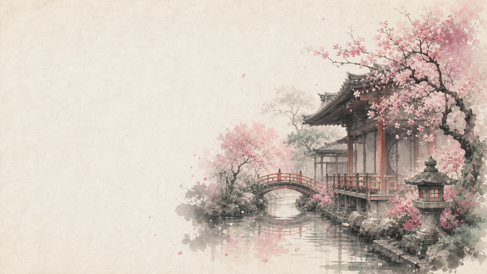
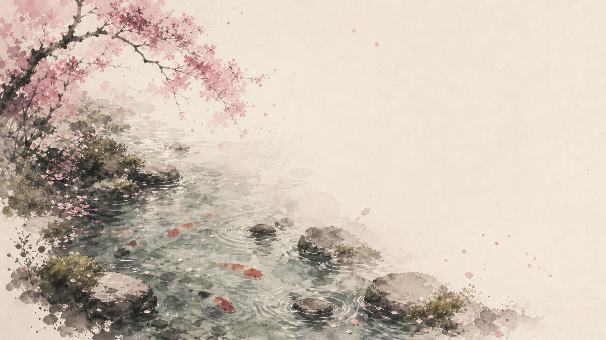
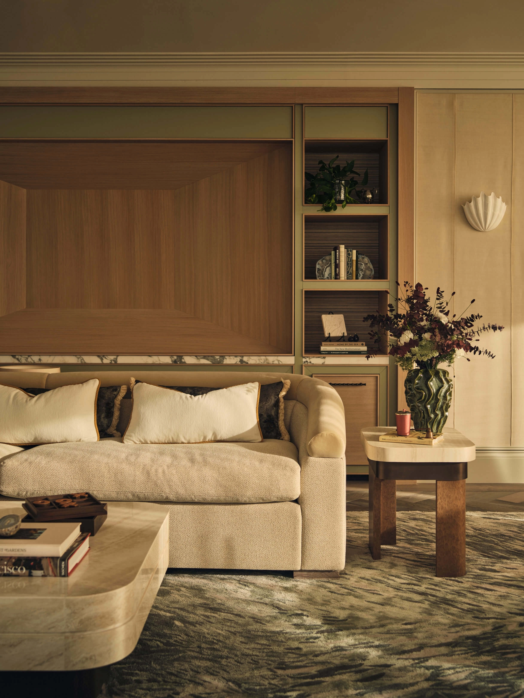
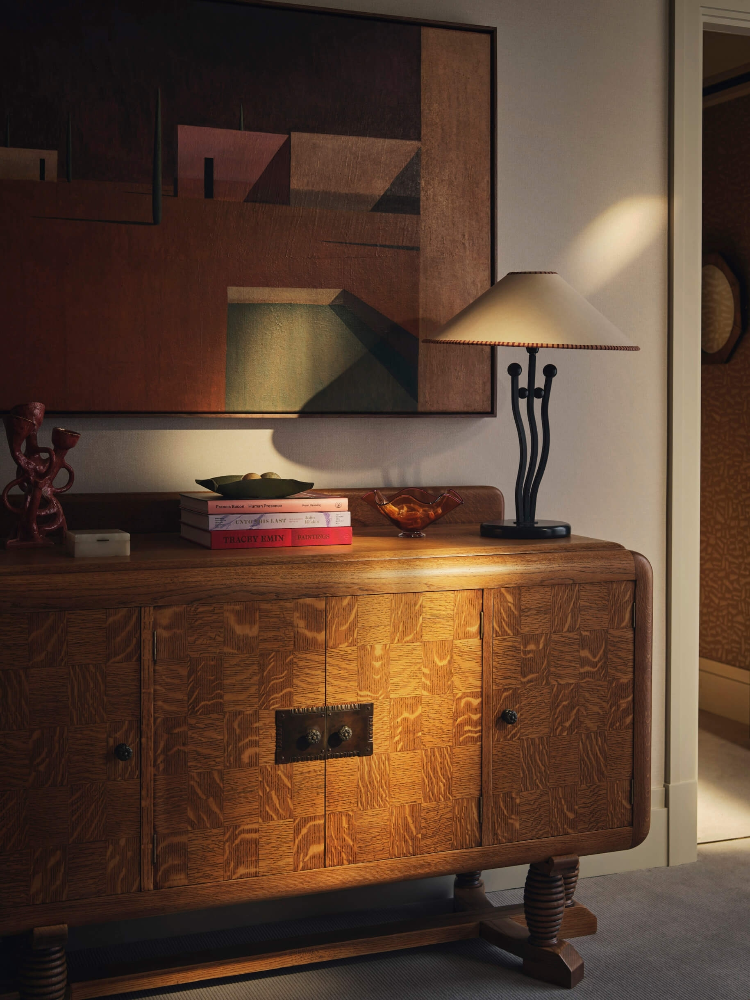

A cerimônia
Às 16h30, sob as árvores.
Ver detalhes
— 01 · Vitrine do sistema
Hero de demonstração — não é a home.
WebGL ondulado · pétalas · grain · vinheta ·
lettering vazado preenchido por foto · recorte ·
numerais vazados · text roll · selo magnético
12·09·2027
— 02 · Fundamentos
Cormorant Garamond 400–500 + itálico · Space Grotesk 400–500 · mono de sistema para metadados
Famílias e carregamento
Aa &
Ana & Pedro · sim, para sempre · 0123456789 · ÁÂÃÇÉÊÍÓÔÕÚ
--wd-serif 'Cormorant Garamond' · pesos 400 / 500 · normal + itálico · woff2 variável (1 arquivo/estilo) · títulos, lettering, numeraisAa
Confirmar presença · 16h30 · 0123456789 · ÁÂÃÇÉÊÍÓÔÕÚ
--wd-sans 'Space Grotesk' · pesos 400 / 500 · corpo, rótulos, botões, eyebrowsAa
Exibido enquanto o woff2 carrega (swap)
serif 'Cormorant' → Garamond → 'Times New Roman' → serif · sans ui-sans-serif → system-ui → -apple-system → 'Segoe UI' → Roboto{ }
--wd-champagne · 11.5px/1.7
--wd-mono ui-monospace, SFMono-Regular, Menlo, Consolas · fonte de sistema (zero download) · só em .ds-meta e tokenscarregamento local · ../koisei-design-system/assets/overview/assets/koisei.aura.build/fonts.css (@font-face espelhado do Google Fonts) · font-display: swap · subconjunto latin U+0000–00FF (cobre todos os acentos do português) · preload do woff2 de Cormorant normal · faixas de peso 400–500 (variável, sem sintetizar negrito)
Nunca use peso acima de 500: não há arquivo e o navegador sintetiza um negrito falso. A seta “→” (U+2192) não está no subconjunto latin — nas interfaces use o ícone solar:arrow-right-linear.
Escala · papel | amostra viva | tamanhos
A coluna da direita mostra o valor declarado (clamp mobile → desktop) e, em dourado, o valor medido agora nesta largura de tela. Lettering vazado: passe o cursor para preencher.
— 03 · Fundamentos
Papel quente dominante, tinta quase preta, um acento champanhe e um toque de blush. Contraste calculado ao vivo (WCAG 2.1).
Gradientes
Champanhe e blush nunca carregam texto informativo sobre papel (contraste < 3:1): use --wd-gold-text para texto dourado em fundo claro, e champanhe como texto apenas sobre --wd-night.
— 04 · Componentes de UI
Genéricos e isolados. Cada um: anatomia · variantes · tamanhos · estados · tokens · animação · demo viva.
Botões
Ação principal, uma por bloco. Anatomia Lando (.btn-w > .btn-inner > .btn-text) com o halo champanhe pulsante.
Estados
--wd-ink--wd-paper--wd-champagne--wd-glow--wd-r-pill--wd-ease-out--wd-ease-snap--wd-dur-basetext roll .char translateY 0 → -100% · .75s · --wd-ease-out · stagger .02s · gatilho hover/focus · seta translateX ±140% · .75s · --wd-ease-snap · halo box-shadow champanhe pulsando 5s ease-in-out · active scale .97 · .35s
O halo só acende no hover (ou fixo no CTA principal com .is-glow). Nunca dois primários lado a lado: o segundo vira outline.
Ação secundária. Preenchimento de tinta sobe por clip-path.
.wd-btn--outline inset 0 0 0 1px --wd-line-strong · ::after clip-path inset(100% 0 0 0) → inset(0) · .75s --wd-ease-inout
Dois comportamentos: entra pela esquerda (Koisei) e recua para a direita (Elicyon).
.u-link::after 1px champanhe · scaleX 0 → 1 · origin left · .35s --wd-ease-out · .button-text-mobile::after 1px currentColor · scaleX 1 → 0 · origin right · .35s
.text-link-w > .text-clip-w > .btn-text[split-text] · mesma rolagem do primário · sem fundo
[data-wd-magnet] 132 × 132 · segue o ponteiro a .3 × offset em .4s · solta com elastic.out(1, .4) .8s · anel de texto gira 22s linear · disco escala 1.06 no hover
Só em ponteiro fino (desktop). No toque vira um botão estático.
.wd-cta-border borda papel 120/96px → 12px · .75s --wd-ease-inout (Elicyon .7s cubic-bezier(.77,0,.175,1)) · gatilho hover/focus do link · foto [data-parallax] scale 1.1
Inputs
label transform .35s --wd-ease-out · .wd-bar scaleX .75s --wd-ease-out · check stroke-dashoffset .75s · gatilho focus / :checked · formulários inertes (submit bloqueado)
Placeholder é sempre “ ” (espaço) para a label flutuar com :not(:placeholder-shown). Erro sempre com texto + ícone, nunca só cor.
Cards

Às 16h30, sob as árvores.
Ver detalhesarticle.galCard · .galNum vazado → tinta no hover/ativo .5s · .galImg scale 1.15 → 1.05 1.1s · moldura -10 → -14px champanhe


Ensaio Pré-wedding2027.wd-mask-frame clip-path com cantos chanfrados 18px · .wd-mask-reveal ellipse(0% 0% at 50% 0%) → ellipse(100% 120% at 50% 0%) + scale 1.12 → 1 · .75s --wd-ease-snap (Lando)
Jantar, brinde e pista até o amanhecer.
.wd-info raio 14 · sobe 4px + borda champanhe no hover/focus-within .75s · ícone 24 em anel 48 se desenha (stroke-dashoffset)

.nav-shell altura 88 → 68 · .nav--scrolled --wd-glass-washi + blur(12px) após 120px · .nav--night --wd-glass-night + tinta creme sobre grupos noite · transição .5s --wd-ease-out · a navbar real deste arquivo usa os três
Sections · moldes
— 02 · Papel
Texto de apoio com até 34em de largura e respiro amplo.
Saiba mais.wd-mold padding 34/28 · vinheta --wd-vignette · intro = eyebrow + .wd-t-h2/h4 + corpo 34em + link · alternar papel → washi → noite, nunca dois iguais seguidos
Entre tantos caminhos,o nosso sempretermina em ummesmo sim.
.wd-statement .ln recuos 0 / 12% / 4% / 22% (offsets Elicyon) · linhas sobem yPercent 110 → 0 · 1.1s --wd-ease-out · stagger .09 · .fade-word --wd-ink-faint → --wd-ink · gatilho scroll (top 70%)
Modais
Tab circula só dentro do cartão; Esc ou o scrim fecham e o foco volta para este botão.
Badges · Tooltips
.wd-badge 28px · raio pill · 11px 500 .14em uppercase · ponto 6px · hover sobe 2px .35s · .is-live pulso 1.8s
Badge é rótulo, não botão. Texto de feedback usa as cores escuras (AA sobre o próprio fundo tingido).
.wd-tip --wd-champagne / --wd-ink (contraste ≈ 6:1) · raio 8 · seta 10px · opacity 0 → 1 + translateY 4px → 0 · .35s --wd-ease-out · atraso .12s · gatilho hover e focus · role="tooltip" + aria-describedby
— 05 · Fundamentos
Grade 24 · traço 1.5px arredondado (cap + join round) · solar via iconify (pré-carregado dos assets) + SVG inline próprio
.wd-i viewBox 0 0 24 24 · fill none · stroke currentColor · stroke-width 1.5 · linecap/linejoin round · cada traço com pathLength="1" → hover anima stroke-dashoffset 1 → 0 em 1.1s --wd-ease-inout · ícones solar (iconify-icon, shadow DOM) só trocam cor
o traço continua 1.5 em todos os tamanhos (sem vector-effect) · abaixo de 14 não usar
ícone informativo herda a cor do texto (currentColor) · champanhe só sobre noite · hover em fundo claro → --wd-gold
— 06 · Movimento
GSAP 3.12.5 · Lenis 1.0.42 no scroller #ds-main · IntersectionObserver · três easings, quatro durações
Easings · passe o cursor para ver a curva
--wd-ease-out · cubic-bezier(.22,1,.36,1)Surgimentos, hovers, text roll, linhas. ≈ GSAP power4.out. Origem Koisei.
--wd-ease-inout · cubic-bezier(.77,0,.175,1)Moldura, modal, capsule, clip-paths. ≈ GSAP power4.inOut. Origem Elicyon.
--wd-ease-snap · cubic-bezier(.65,.05,0,1)Máscaras, highlight, setas, temas. Origem Lando (.75s).
elastic.out(1,.4) · linearElástico só na soltura do magnético. Linear só em marquee, rotação e scrub.
--wd-dur-fasthover de cor, sublinhado, label, tooltip
--wd-dur-basetext roll, moldura, máscara, modal, highlight
--wd-dur-slowrevelação de linhas, surgimento, preenchimento
--wd-dur-ambientglow e respiração em loop (4–6s)
Valores das fontes foram normalizados para este vocabulário: Lando text roll .6s power3.out → .75s seda; Elicyon moldura .7s → .75s cortina; Koisei 1.1s power4.out mantido.
Demos · cada uma com “Repetir ↻”
.mLine > span yPercent 110 → 0 · rotate 1.5 → 0 · 1.1s power4.out · stagger .09 · gatilho scroll (top 70%)Nos vimos numa primavera e ficamos.
.mImg width 0 → 2.1em · altura .62em · raio pill · 1.2s power4.inOut (--wd-ease-inout) · gatilho scrollconvidados
anos juntos
sim
.counter[data-to] 0 → valor · 1.6s power2.out · snap 1 · toLocaleString('pt-BR') · gatilho scroll (top 85%), uma vez.footer-char yPercent 110 → 0 · 1.1s --wd-ease-out · stagger .05 · gatilho scroll (Elicyon sign-off).btn-text .char translateY 0 → -100% · .75s --wd-ease-out · stagger .02 · cópia via text-shadow · gatilho hover / focusUm dia simples,
cheio de gente amada
e luz de fim de tarde.
.line clip-path inset(0 100% 0 0) → inset(0) .75s power2.out · .high-line-reveal champanhe scaleX 1 → 0 (origem direita) .75s --wd-ease-snap, atraso .3s · stagger .12 por linha— do dia para a noite
canvas#wd-dissolve WebGL (three r160) · fbm noise mistura asakusa-lantern-water → night-river-lantern (uP 0 → 1) · clip-path inset(11% 24%) → inset(0) · fundo washi → --wd-night · gatilho pin + scrub (sticky no #ds-main) · texturas carregadas só quando o bloco se aproximamova o cursor aqui
pétala bezier Koisei (#E8B4C0 + veio #D98E9F .55) · queda + balanço sin · fogem do ponteiro (raio 120px) · hero usa InstancedMesh WebGL (260 | 90 mobile) · gatilho load / ponteiro · só renderiza em vista
Parallax
[data-parallax="inner"] scale 1.1 · translateY ±(progresso × 8%) · gatilho scroll do #ds-main · sem easing (scrub direto, lerp .08 do Lenis).wd-cta-border border-width → 12px · .75s --wd-ease-inout · gatilho hover do CTA (Elicyon)[data-wd-magnet] x/y = offset × .3 · .4s · soltura .8s elastic.out(1,.4) · gatilho pointermove (ponteiro fino)Koisei ponto 8px + anel 32 → 56px sobre links (lerp .15) · Elicyon seta dourada #907533 14 × 16 + rótulo · ambos mix-blend difference · desligado no toque[data-css-marquee-list] translateX 0 → -100% · 30s linear infinito · duas listas iguais · máscara nas bordas · pausa no hover · só roda em vista (Lando)path[pathLength=1] stroke-dashoffset 1 → 0 · 2.4s --wd-ease-inout · traço gradiente dourado · ponto segue getPointAtLength · gatilho load / scroll@keyframes wd-glow / wd-halo text-shadow / box-shadow champanhe .28 ↔ .62 · 5s ease-in-out infinito · nunca neon (raio máx. 80px, alpha máx. .62)Com prefers-reduced-motion: reduce: sem Lenis, pins, pétalas, WebGL em loop, glows e transições — tudo é exibido no estado final (linhas visíveis, contadores no valor, moldura aberta, dissolve na noite).